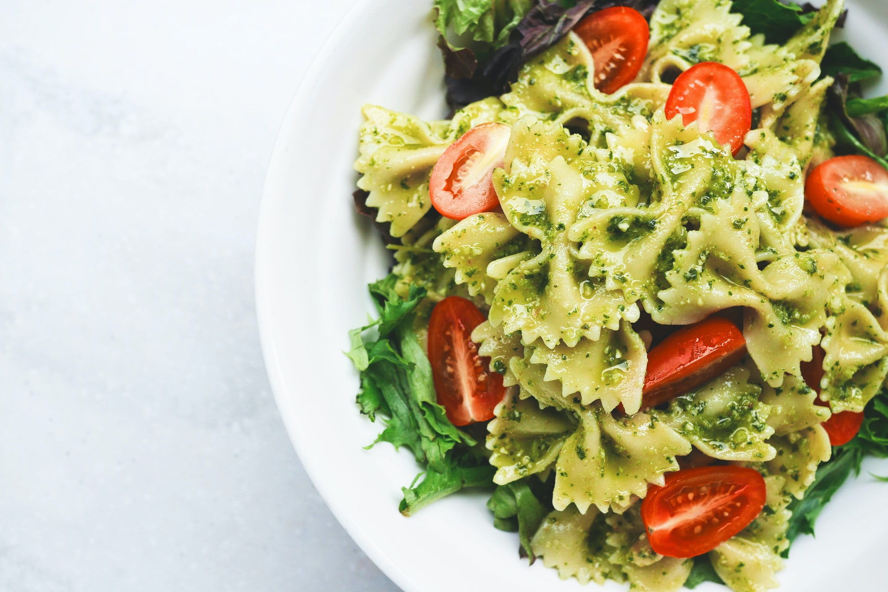

Recipe: Pasta with Pesto

This is a very easy yet tasty dish. It only takes like 10 minutes to make and is
very hard to mess up. On this picture you can see Farfalle pasta. Picture by @eaterscollective on
unsplash.
Ingredients
- Pasta of your choice, I prefer Farfalle
- Pesto of choice. You can make your own, but thats for another recipe.
- Cherry Tomatoes
- Parmesano
Steps
- Boil about 500 ml of water
- Put salt in it
- Put pasta in it
- Boil for about 10 min, see packaging for details
- Pasta on plate
- Add a spoon of pesto
- Cut 5-7 cherry tomatoes in half and add them on the plate
- Grate some parmesano over your dish
- Enjoy